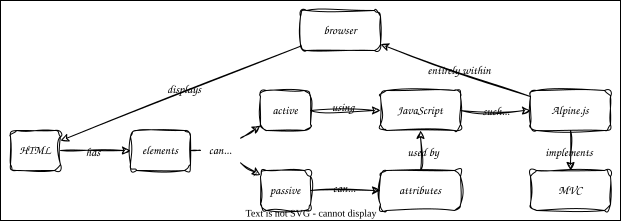

A Graphical User Interface
Overview

Outline
- Use Alpine to make a graphical editor for plate layouts
- What treatment is applied to each cell
- Personal details
- Use CSS flexbox layout to create two-column page
handwritten.htmlcreates everything manually- Shared data stored in
x-dataattribute of enclosingdiv(the row)treatmentsis available treatments (including empty string for "none")currentis currently-selected treatmentdatais the plate data keyed by row/column identifier
- Selectors are radio buttons
- Share the same name to make them a group (only one can be selected at a time)
- Value is self-explanatory
x-modelproperty tells Alpine what to assign the value to- Writing these by hand was annoying
- Plate is a table
- Each cell's
x-textproperty tells Alpine where to get data to display x-on:clickis the action to take when the cell is clicked
- Each cell's
- Note: do not change cell values directly
- MVC: controller updates the model, view reflects the model
- Templating
- Template in
templates/design_simple.html - For now, use
render.pyto test it out - Templated version is 51 lines instead of 72, but will automatically expand as we go to larger plates
- Template in
- Now add dosages in
templates/design_dosages.html- Invariant: (no treatment and no dosage) or (some treatment and some dosage)
- I.e., cannot have a treatment with no dosage, and cannot have a dosage if no treatment selected
- Initialize to "no treatment" (empty string) and "no dosage" (also empty string)
- But no radio button for "no dosage" case
- When a treatment is first selected, the dosage is set to the minimum dosage
- Use
$watchto watch for changes to thecurrent_treatmentandcurrent_dosagevariables - Update the other state elements accordingly
- Again, the controller updates the model, the view displays its current state